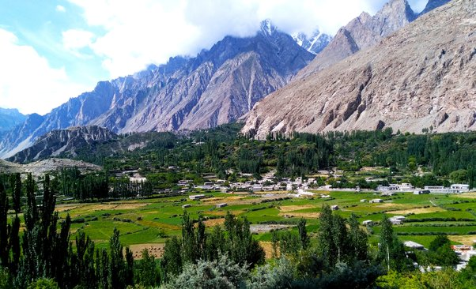

<div class="portfolio-single-load clearfix">
    <div class="custom-full-width-box">
        <div class="custom-container">
            <div class="custom-row align-items-center">
                <div class="custom-image-column">
                    
                </div>
                <div class="custom-text-column">
                    <h2 class="custom-heading">Ghulkin</h2>
                    <p class="custom-paragraph">
                        Ghulkin, nestled along the Karakoram Highway in Gilgit-Baltistan, is renowned for its stunning natural beauty and warm hospitality. With a population of around 1,000 people, the village offers a glimpse into traditional Wakhi culture. Visitors can explore nearby attractions like Passu Glacier and Passu Cones, marveling at their natural beauty and geological significance. Ghulkin offers authentic cultural experiences and eco-tourism opportunities.
                    </p>
                </div>
            </div>
        </div>
    </div><!-- .custom-full-width-box end -->

</div><!-- end single-project -->
